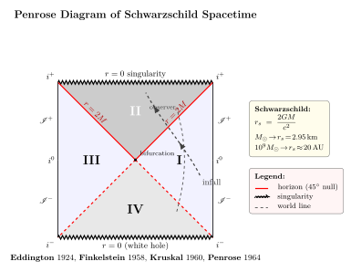

视界 — 进得去, 出不来, 究竟是什么意思?
上一节我们把 Einstein 场方程从作用量推了出来, 顺手许诺了一个事: 用它的最简非平凡解 — Schwarzschild — 直接造一个黑洞. 现在我们就来兑现. Schwarzschild 1916 年 1 月 13 日在德俄前线的战壕里收到 Einstein 方程的稿件, 不到两周写出第一个非平凡解寄回 Berlin, 半年后死于 Pemphigus 自身免疫病. 他的解只用一个参数 $M$ (黑洞总质量), 描述一个静态、球对称、真空的时空 — 也就是, 一颗孤立的恒星 / 一颗黑洞外面的"远场".
这个解给出了"视界"这个 GR 里最迷人也最容易被误解的概念. 你大概听过这种叙述: "黑洞是引力强到光都跑不出来的地方". 这是 1783 年 Michell 用 Newton 引力做的估算 (后被 Laplace 1799 重复), 数值碰巧也给出 $r_s=2GM/c^2$, 但它的物理图像是错的 — 视界不是"光从这里发出, 跑到一半被拉回来"的地方, 而是因果地平线: 从视界内部任何一点发出的任何信号 (光、引力波、引力子...) 都不可能到达外部的任何观测者, 哪怕给无限的时间. 这一节我们就把"因果地平线"这件事解剖清楚, 并搞懂"奇异"分坐标的还是物理的, 顺便看看 Penrose 怎样把整个时空压成一张菱形纸来看清楚.
一、Schwarzschild 度规与 $r=r_s$ 的两种"奇异"
Schwarzschild 解写出来是
$$ ds^2 \;=\; -\Big(1-\frac{r_s}{r}\Big)c^2\,dt^2 \;+\; \Big(1-\frac{r_s}{r}\Big)^{-1}dr^2 \;+\; r^2\,d\Omega^2, \tag{1} $$
其中 $r_s=2GM/c^2$ 是 Schwarzschild 半径, $d\Omega^2=d\theta^2+\sin^2\theta\,d\varphi^2$ 是单位 2-球的角元. 这是 Birkhoff 定理保证的、Einstein 真空方程 $R_{\mu\nu}=0$ 在球对称下的唯一非平凡解 — 任何静态/动态的、球对称的、真空区域都长这样. 它含一个待定参数 $M$, 由弱场极限对照 Newton 势 $\Phi=-GM/r$ 钉死.
把数字代进去. 太阳质量 $M_\odot=1.989\times 10^{30}\,\mathrm{kg}$,
$$ r_s^\odot \;=\; \frac{2GM_\odot}{c^2} \;=\; \frac{2\times 6.674\times 10^{-11}\times 1.989\times 10^{30}}{(3\times 10^8)^2} \;\approx\; 2.95\,\mathrm{km}. $$
太阳的物理半径是 $7\times 10^5\,\mathrm{km}$, 远在它自己的 Schwarzschild 半径外, 所以太阳不是黑洞. 但若你能把整个太阳压进一个 3 km 半径的球, 它就会变成一个 Schwarzschild 黑洞. 把这个数推到大: 类星体级的超大质量黑洞 $M\sim 10^9 M_\odot$ (e.g. M87* 是 $6.5\times 10^9 M_\odot$, NGC 4889 估约 $2\times 10^{10} M_\odot$), $r_s\approx 3\times 10^{12}\,\mathrm{m}\approx 20\,\mathrm{AU}$ — 大到比海王星轨道还远.
现在看 (1) 在 $r\to r_s$ 处发生什么. $g_{tt}=-(1-r_s/r)c^2$ 趋向 0, 而 $g_{rr}=(1-r_s/r)^{-1}$ 发散到无穷. 看起来很糟, 但物理直觉就让我们怀疑: 一个孤立的、有限质量的黑洞, 它的视界应该是个普通的地方 — 跌进去的宇航员若没被潮汐力撕碎, 在视界处他自己测不到任何"特别"的事. 那 (1) 里那两个发散到底意味着什么?
判定原则: 物理奇点 ↔ 标量曲率不变量发散. Schwarzschild 时空里 Kretschmann 标量
$$ K \;\equiv\; R_{\mu\nu\rho\sigma}R^{\mu\nu\rho\sigma} \;=\; \frac{48 G^2 M^2}{c^4\, r^6}. $$
在 $r=r_s$ 处 $K=48 G^2 M^2/(c^4 r_s^6)=3 c^8/(4 G^4 M^4)$, 完全有限. 真正发散的地方是 $r=0$. 也就是说: $r=r_s$ 是 (1) 这套坐标的奇异, 不是时空本身的奇异; $r=0$ 才是物理奇点. 我们要做的就是换坐标, 让度规分量在 $r=r_s$ 处也保持有限.
二、Eddington-Finkelstein 与"穿过视界"
沿径向运动的光线在 (1) 里满足 $ds^2=0, d\Omega=0$, 给出
$$ c\,dt \;=\; \pm\frac{dr}{1-r_s/r}. $$
定义"tortoise coordinate"
$$ r^* \;\equiv\; r + r_s\ln\Big|\frac{r}{r_s}-1\Big|, \qquad \frac{dr^*}{dr}=\frac{1}{1-r_s/r}. $$
它把视界 $r=r_s$ 推到 $r^*\to-\infty$, 把无穷推到 $r^*\to+\infty$. 沿光线 $c\,dt=\pm dr^*$, 即 $t\mp r^*/c=\mathrm{const}$ — 这就提示: 用前进光锥坐标 $v\equiv t+r^*/c$ (沿入射光线 $v=\mathrm{const}$) 替换 $t$. 把它代回 (1), 经过几行代数 (用 $dt=dv-dr^*/c$, 然后 $dr^*=dr/(1-r_s/r)$), 度规变成
$$ ds^2 \;=\; -\Big(1-\frac{r_s}{r}\Big)c^2\,dv^2 \;+\; 2c\,dv\,dr \;+\; r^2\,d\Omega^2. \tag{2} $$
这就是 Eddington-Finkelstein 进光坐标下的 Schwarzschild 度规. 关键: (2) 里所有度规分量在 $r=r_s$ 处都有限可逆. 行列式 $-c^2 r^4\sin^2\theta$ 跟 $r$ 没关系, 在 $r=r_s$ 不退化. 这套坐标光滑覆盖了整个 $r\gt 0$, 包括视界两侧.
用 (2) 看入射光线: $ds^2=0, d\Omega=0, dv=0$ 给出 $dr$ 任意 — 这是入射光线本身, $v=\mathrm{const}$ 一族光锥的"内壁". 出射光线: $0=-(1-r_s/r)c^2 dv^2 + 2c\,dv\,dr$ 给出 $dv/dr=2/(c(1-r_s/r))$. 在 $r\gt r_s$ 时 $dv/dr\gt 0$, 出射光向 $r$ 增大方向跑得出去; 在 $r\lt r_s$ 时 $1-r_s/r\lt 0$, $dv/dr\lt 0$ — "出射"光线的 $r$ 反而减小! 也就是说, 视界内部, 不存在 $r$ 增大的零测地线; 任何光线 (入射或出射) 都被强制向 $r$ 减小的方向走. 这正是"因果地平线"的核心: 光锥被坐标系翻倒了, 内部的未来指向 $r$ 减小, $r=r_s$ 是一条单向膜.
这是一个比 Newton 引力 "光被引力拉回" 远更深的图像 — 在视界内部, $r$ 不再是空间坐标而是类时坐标 (因为 $g_{rr}\lt 0$, 而 $g_{tt}\gt 0$ 在 $r\lt r_s$ 反号了); 进入视界的观测者面对 $r=0$ 就像我们面对未来, 他不能选不去. 这一张图后面还会再用.
三、Penrose 共形紧化: 把无穷压成一张菱形

Eddington-Finkelstein 坐标解决了"视界处坐标不奇异"的问题, 但它覆盖的是黑洞 (区 I + II), 不能同时显示 Kruskal 1960 给出的最大延拓. 我们要的是一种工具, 把整个时空 — 含无穷远 — 完整地画成一张图. 这就是 1964 年 Penrose 引入的共形紧化图 (Penrose diagram).
方法: 用一个共形变换 $\tilde g_{\mu\nu}=\Omega^2(x) g_{\mu\nu}$ 把 "无穷" 拽到有限位置, 然后画出来. 共形变换保留光锥结构 (因为 $ds^2=0$ 当且仅当 $\widetilde{ds^2}=0$), 所以图上的 $45°$ 仍是光线方向, 因果结构完全正确. 选 $\Omega$ 的具体函数细节这里跳过, 结果是一张菱形:
- 区域 I — 我们这边的渐近平直外部, 包含远离黑洞的所有观测者; 边界是 $r\to\infty$ (即 $i^0$ 类空无穷, $\mathscr{I}^\pm$ 未来/过去类光无穷, $i^\pm$ 未来/过去类时无穷).
- 区域 II — 黑洞内部 ($r\lt r_s$ 且向未来). 顶端那根锯齿线是 $r=0$ 物理奇点 (一条类空线 — 它在图上是水平的, 不是垂直的, 这意味着它是"未来"而不是"中心").
- 区域 III — 一个跟 I 镜像对称的"平行外部". 它存在是 Kruskal 延拓的数学结果, 但与 I 之间没有任何因果连接 (中间隔着 II 和 IV).
- 区域 IV — 一个时间反演的黑洞, 即白洞: 物体只能从中喷出, 不能跌入. 它在物理上是个数学产物, 真实的引力坍缩不会产生.
事件视界是 $45°$ 的两条线: $\mathscr{H}^+$ (从原点指向右上 / 左上) 把 II 与 I, II 与 III 分开, 称为未来视界; $\mathscr{H}^-$ (从原点指向右下 / 左下) 把 IV 与 I, IV 与 III 分开, 称为过去视界. 任何粒子的世界线在图上必须保持斜率 $|dy/dx|\ge 1$ (光线 $=1$, 类时 $\gt 1$), 因此一旦穿过 $\mathscr{H}^+$, 它的未来全部包含在 II 里, 不可能再回到 I — 这就是"不可逆穿越". 反过来, 一个 I 区的观测者把光信号往 II 区里送毫无意义: 他自己永远不会收到回信, 因为 II 区的未来终结在 $r=0$ 的奇点上, 没有任何类时世界线能从 II 走回 I.
另一个关键事实: Penrose 图上"视界并不是空间里的某一处", 而是一个类光面 — 没有静止观测者站在视界上. 若你尝试停在 $r=r_s$, 你需要无穷大的本征加速度; 实际上, 根据等效原理, 你只能要么从外面绕道, 要么往里掉. 这跟 Rindler 视界 (vol-5 第 5 节) 是同一种结构 — 加速观测者的视界也是一个 $45°$ 的零面.
四、视界面积与一段历史
事件视界这个 2-球面的面积
$$ A \;=\; 4\pi r_s^2 \;=\; \frac{16\pi G^2 M^2}{c^4}. \tag{3} $$
这看起来只是一个几何的小事实, 但它是黑洞热力学的入口. 1971 年 Hawking 证明了一条非常有力的定理 — 面积定理 (Area Theorem): 在合理的能量条件下, 黑洞视界面积 $A$ 不可减小, $dA/dt\ge 0$. 两个黑洞融合 (e.g. GW150914 里 LIGO 看到的那一例), 末态视界面积必大于初态两个视界面积之和. 这与热力学第二定律 $dS/dt\ge 0$ 形式上完全一致, 引出 Bekenstein-Hawking 公式 $S_{\rm BH}=k_B A/4\ell_p^2$ — 第 25 节的主角.
我们把数代一下. 一个 $M=10\,M_\odot$ 的恒星级黑洞, $r_s\approx 30\,\mathrm{km}$, $A\approx 1.1\times 10^{10}\,\mathrm{m^2}\approx 10^4\,\mathrm{km^2}$ — 跟一个小国差不多. M87* ($M=6.5\times 10^9 M_\odot$), $r_s\approx 1.9\times 10^{13}\,\mathrm{m}$, $A\approx 4.6\times 10^{27}\,\mathrm{m^2}$. EHT 2019 拍到的"阴影"半径不是 $r_s$ 而是 $\sim 2.6 r_s$ (光子球加共形效应), 但这是另一回事, 第 17 节会写.
历史. 1916 年 Schwarzschild 给出 (1) 后, 大家立刻看到 $r=r_s$ 处度规系数发散, 当时被叫"Schwarzschild 奇点". 整整 40 年里这件事被认为是个物理奇点, Einstein 自己 1939 年还试图用一篇论文论证不可能形成视界. 转折在 1924 年 Eddington — 写下后来被叫 Eddington-Finkelstein 的坐标 (但他自己没用它去解释视界, 当时他还在跟 Chandrasekhar 吵 white dwarf 极限)... 真正搞清"视界 ≠ 奇点"的是 1958 年 Finkelstein, 他把 Eddington 的进光坐标重新提出来, 写下"单向膜"这个词. 1960 年 Kruskal (一个等离子物理学家, 顺便插一脚) 给出最大延拓的两套坐标, 揭示出区域 III 和 IV 的存在. 1964 年 Penrose 把整个图共形紧化, 第一次让人能"用眼睛看清楚"四个区域和它们之间的因果结构. 1965 年 Penrose 用相同的工具证明奇点定理: 在合理能量条件下, 任何足够强的引力坍缩必产生奇点 — Hawking 1965-1970 把它推广到宇宙学奇点. 这一连串工作让 Penrose 拿到 2020 年的 Nobel.
"黑洞" (black hole) 这个名字本身, 1967 年 Wheeler 才在 Princeton 的一次讲座上首次公开使用 (他后来归功于一位听众的提议). 在那之前, 人们叫它"frozen star" (冻星) 或 "collapsed object" — 因为远方观测者看跌入物体的本征时间被无穷红移, 看上去就停在视界上. 但这只是外部观测者的图景; 在跌入者自己的钟上, 穿越视界只是几毫秒的事 — 他看不到任何"被冻住", 只看到自己一头扎进 $r=0$. 这两个视角的统一, 正是 Eddington-Finkelstein 坐标和 Penrose 图给我们的核心收获: 视界处没有任何不连续, 不连续的只是 Schwarzschild 那套不合适的坐标钟.
五、视界、奇点、与下一节的入口
把这四件事按"谁是物理"梳理一遍. (a) 视界 $r=r_s$: 不是物理奇点, 是因果地平线; 它是一个光滑 (本征曲率有限) 的 $45°$ 类光面; 内外的物理是连续的, 不连续的只是 Schwarzschild 坐标. (b) 真奇点 $r=0$: Kretschmann 标量 $K=48G^2M^2/(c^4 r^6)$ 发散; 在 Penrose 图上是一条类空线 (区 II 顶端的锯齿); 跌入者必到达, 因为奇点是他的未来, 不是空间里的某处. (c) 区域 III 和 IV: Kruskal 延拓的数学产物; 真实坍缩塑造的黑洞 (e.g. 一颗超新星的核心崩坏成黑洞) 的 Penrose 图只有 I + II + 一段 II 顶端的奇点, III 和 IV 不存在 — 因为坍缩前的恒星本身占据了 IV 应在的位置. 完整的 Kruskal 延拓只是"永恒黑洞" (无中生有的、$M$ 不随时间变的、左右对称的) 的数学解.
这件事还有一个关键不变量 — 视界面积 $A=4\pi r_s^2$. 它不能减小; 第 25 节我们就把它跟 $S=k_B A/4\ell_p^2$ 这条 Bekenstein-Hawking 公式接起来. 那时"视界"会从一个几何概念变成热力学概念, 黑洞会有温度 $T=\hbar c^3/(8\pi G M k_B)$, 一个太阳质量的黑洞 $T\approx 6\times 10^{-8}\,\mathrm{K}$, 比 CMB 还冷得多, 所以宏观黑洞实际上在吸收背景辐射 (净增长). 但这是后话.
下一节 (第 17 节"掉进黑洞究竟是什么体验?") 我们就把这一节的工具用起来 — 算一个跌入者的本征时间, 算他在视界处的潮汐力, 看远方观测者看到他时光线的红移, 把 EHT 拍到的 M87* 阴影解释成 "从远处看到的黑洞剪影". 这一节给出的 Penrose 图骨架, 就是下一节计算的地图.
小结
这一节我们把 "视界" 解剖成一个具体的几何对象. Schwarzschild 度规 $ds^2=-(1-r_s/r)c^2 dt^2+(1-r_s/r)^{-1}dr^2+r^2 d\Omega^2$ 在 $r=r_s\equiv 2GM/c^2$ 处的"奇异"是坐标的奇异 — Kretschmann 标量 $K=48 G^2 M^2/(c^4 r^6)$ 在 $r=r_s$ 完全有限, 真奇点在 $r=0$. 1924 年 Eddington / 1958 年 Finkelstein 的进光坐标 $v=t+r^*/c$ 把度规变成 $ds^2=-(1-r_s/r)c^2 dv^2+2c\,dv\,dr+r^2d\Omega^2$, 在 $r=r_s$ 光滑可逆; 视界于是显现成一张单向膜 — 内部光锥被翻倒, 任何信号都强制向 $r=0$ 走, 不可能再返回外部. 1960 年 Kruskal 给出最大延拓 (含平行宇宙 III 与白洞 IV), 1964 年 Penrose 把它共形紧化成一张菱形, 视界是 $45°$ 类光线, 真奇点是顶端类空线 — 谁的"未来"指向 $r=0$ 一目了然. 数字: 太阳 $r_s=2.95\,\mathrm{km}$, $10^9 M_\odot$ 的 SMBH $r_s\approx 20\,\mathrm{AU}$. 视界面积 $A=4\pi r_s^2$ 是 Hawking 面积定理的对象, 第 25 节就接到 $S_{\rm BH}=k_B A/4\ell_p^2$. 下一节我们坐进飞船跌进去, 看本征时间、潮汐、和远处看到的红移.
▲